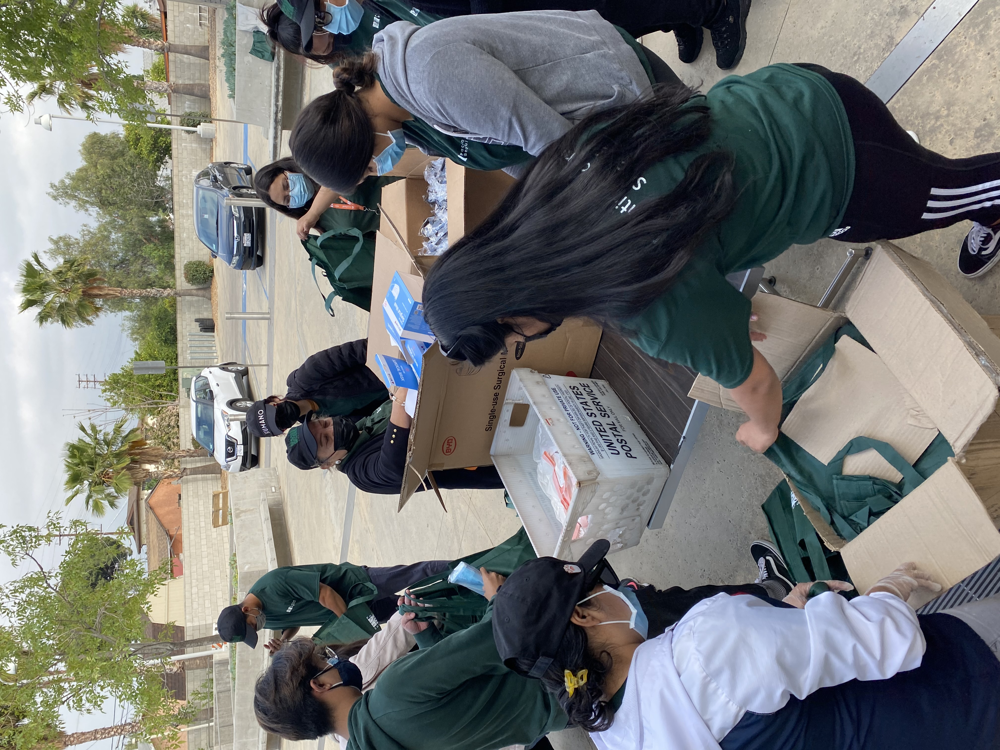

Darinka Garcia
I am a sophomore at the University of California, Riverside. I’m currently pursuing a Business Administration major with an emphasis in Marketing. I am a strong working, immigrant woman with a passion to push through all barriers and be the best at what I do. I have a strong passion for business as well as leading. I have a numerous amount of skills and experience that can be helpful in all situations, as well as I am a quick-learner and team-oriented individual. I grew up in the U.S. with loving and hard working parents who taught me the importance of work ethic and endurance to help me achieve my goals. I was taught from a young age to be confident, strong, but also humble, all very important characteristics that I can bring to any environment I work in. I have a set of goals in mind and I will try everything to achieve any dreams I may have, combatting everything in between.
I started my first leadership roles in high school as I took lead on big events happening in my school. I also became president of 2 clubs, Key Club and Eco-League. My biggest leadership role in high school however was becoming Vice President of my student body, giving me a lot of experience in managing people and managing different events efficiently. In my work life I’ve always had very self-managing jobs at my City Hall. I canvass around the community and call folks from home with information and benefits that can help their families and our community. I work for Pacoima Beautiful, a non-profit organization that focuses on environmental justice and community engagement and aid. In 2020, despite the pandemic I went out with more driven individuals to help people complete their census to benefit their community. This year I’m helping people vaccinated in my community.
My recent clash with leadership and what drew me back to business administration was my role as Team Lead for Pacoima Beautiful. I managed a team of our 20 people who canvassed along with me all over the San Fernando Valley to help people get vaccinated against COVID-19. We distributed around nearly 700 appointments in only 3 months, and helped distribute thousands of personal protection equipment items. It was a very successful outreach project that helped thousands of people reach vaccines, pop-ups, clinics, and so much more from the comfort of their front door. I have a very strong love for my community, especially Pacoima because of the amazing folks that live here. We are all one with similar struggles and similar feelings about our community, and helping them protect themselves to the best of their ability in this pandemic is one of the most important things I’ve done in my life so far. When someone asks me in the future what I was doing during the COVID-19 Pandemic, I can tell them I was helping save people’s lives.
Experience
Team Leader
• Responsible for training new hires on April due to past extensive experience canvassing and using the system we used.
• Led a group of 20 individual in canvassing around different communities.
• Managed data and inputted data into systems, keeping track of the number of doors knocked on, appointments made, people contacted, and more.
• Motivated my team members to perform to their very best, and aid those in need with the utmost respect and patience despite any push-back they receive.
• Resolved any issues that were brought up as well as reported back to the Organizing manager for support in troubleshooting.
Census Outreach Member
• Effectively and sensitively communicated with all type of individuals to encourage them to complete their census.
• Improved census-response rates through effective phone banking and community canvassing.
• Maintained confidentiality when addressing sensitive information with individuals.
• Maintained updated knowledge about the census and current response-rates as well as memorized the website and phone numbers where you could complete the census.
Crew Member
• Organized and restocked pizza toppings and optional sauces to keep the team productivity effectively moving.
• Remained mindful of workplace safety as well as sanitation by constantly washing my hands and wearing gloves.
• Helped prepare the food offered after gaining my Food Handler's Certificate.
• Sent specific and general orders to the food preparers through computer maneuver and processed customer payments quickly and returned exact change and receipt.
Education
University of Califoria, Riverside
Arleta High School
Portfolio
